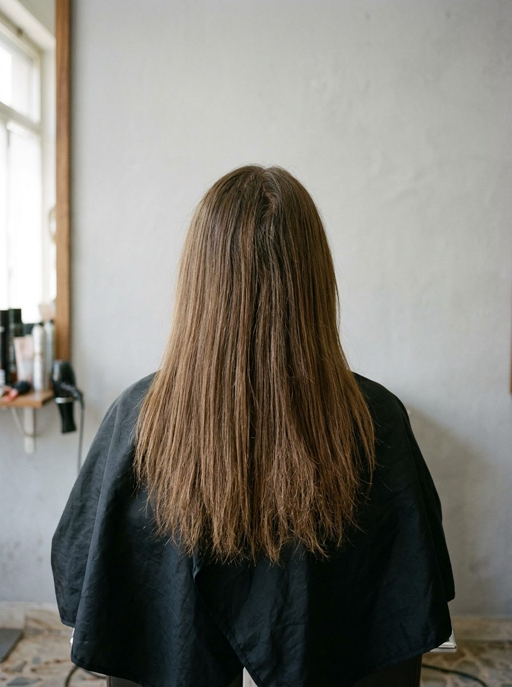

Prima
Dopo
Da castano spento a rame
Tinta, lucidante e venti centimetri in meno. Tre ore di poltrona per Giulia.
Salone Maria

Prima
Dopo
Tinta, lucidante e venti centimetri in meno. Tre ore di poltrona per Giulia.
Salone Maria